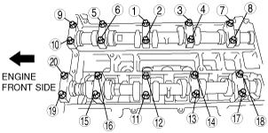

Workshop Manual ➭ ENGINE ➭ MECHANICAL[L8, LF] ➭ VALVE CLEARANCE ADJUSTMENT [L8, LF]
VALVE CLEARANCE ADJUSTMENT [L8, LF]
id0110a9803300
1. Remove the battery and battery tray. (See BATTERY REMOVAL/INSTALLATION [L8, LF].)
2. Remove the plug hole plate. (See PLUG HOLE PLATE REMOVAL/INSTALLATION [L8, LF].)
3. Remove the air cleaner. (See INTAKE-AIR SYSTEM REMOVAL/INSTALLATION [L8, LF].)
4. Disconnect the ventilation hose. (See QUICK RELEASE CONNECTOR (EMISSION SYSTEM) REMOVAL/INSTALLATION [L8, LF].)
5. Remove the front suspension tower bar (joint).FRONT SUSPENSION TOWER BAR REMOVAL/INSTALLATION.)
6. Remove the CMP sensor. (See CAMSHAFT POSITION (CMP) SENSOR REMOVAL/INSTALLATION [L8, LF].)
7. Disconnect the OCV connector. (With variable valve timing mechanism.)
8. Disconnect the P/S pressure switch connector.
9. Remove the ignition coils. (See IGNITION COIL REMOVAL/INSTALLATION [L8, LF].)
10. Remove the cylinder head cover. (See TIMING CHAIN REMOVAL/INSTALLATION [L8, LF].)
11. Remove the drive belt. (See DRIVE BELT REPLACEMENT [L8, LF].)
12. Remove the engine front cover lower blind plug.
|
|
 beleue00000039
beleue0000003913. Remove the engine front cover upper blind plug.
|
|
 beleue00000040
beleue0000004014. Remove the cylinder block lower blind plug.
15. Install the SST as shown.
|
|
 ampjjw00002884
ampjjw0000288416. Turn the crankshaft clockwise until the crankshaft is in the No.1 cylinder TDC position.
17. Loosen the timing chain using the following procedure.
(1) Insert a suitable bolt (M6 X 1.0, length 25—35 mm {0.99—1.3 in}) into the engine front cover upper blind plug and tighten it until it contacts the chain tensioner arm, and then rotate it back one turn. (Set the bolt slightly away from the chain tensioner arm so that it does not contact it.)+-----------------------------------------------------------+
|  beleue00000041 |
+-----------------------------------------------------------+
beleue00000041 |
+-----------------------------------------------------------+
(2) Using the cast hexagon on the exhaust camshaft, apply force counterclockwise to facilitate unlocking the chain tensioner ratchet.+-----------------------------------------------------------+
|  am8rrw00002539 |
+-----------------------------------------------------------+
am8rrw00002539 |
+-----------------------------------------------------------+
(3) Using a Hex bit socket (2.5 mm {0.098 in}) or T15 Torx bit socket, unlock the chain tensioner ratchet so that it can be lifted up.+-----------------------------------------------------------+
|  am8rrw00002601 |
+-----------------------------------------------------------+
am8rrw00002601 |
+-----------------------------------------------------------+
(4) Using the cast hexagon on the exhaust camshaft, apply force in the direction of the engine rotation to increase tension on the chain.+-----------------------------------------------------------+
|  am8rrw00002541 |
+-----------------------------------------------------------+
am8rrw00002541 |
+-----------------------------------------------------------+
Note• The chain tensioner rack is compressed using the chain tension generated by applying force to the exhaust camshaft in the direction of the engine rotation.
|
|
 beleue00000042
beleue00000042Note• The ratchet has not been unlocked if the bolt cannot be pressed in approx. 5 mm {0.2 in}.
(5) Screw in the bolt set in Step 1 approx. 5 mm {0.2 in} and secure the tensioner arm with the rack compressed.+-----------------------------------------------------------+
|  aprjjw00003610 |
+-----------------------------------------------------------+
aprjjw00003610 |
+-----------------------------------------------------------+
• If the tensioner arm cannot be secured, return the bolt to its original position and repeat the procedure from Step 3.
18. Hold the exhaust camshaft using a suitable wrench on the cast hexagon as shown.
|
amxzzw00002427 |
Caution• Perform the work carefully so that the washer does not drop out.
19. Remove the exhaust camshaft sprocket bolt, exhaust camshaft sprocket, and washer as a single unit.
|
beleue00000044 |
20. Remove the OCV. (With variable valve timing mechanism.) (See OIL CONTROL VALVE (OCV) REMOVAL/INSTALLATION [L8, LF].)
21. Loosen the camshaft cap bolts in several passes in the order shown.
|
e5u110zw5851 |
Note• The cylinder head and the camshaft caps are numbered to make sure they are reassembled in their original position. Do not mix the caps.
22. Remove the camshafts.
23. Remove the tappet.
24. Select proper adjustment tappet.
New adjustment tappet
= Removed tappet thickness + Measured valve clearance - Standard valve clearance (IN: 0.25 mm {0.0098 in}, EX: 0.30 mm {0.0118 in})
Valve clearance [Engine cold]
IN: 0.22—0.28 mm {0.0087—0.0110 in}
EX: 0.27—0.33 mm {0.0107—0.0129 in}
25. Apply the gear oil (SAE No. 90 or equivalent) to each journal of the cylinder head as shown in the figure.
|
amxzzw00002428 |
26. Install the camshaft with No.1 cylinder aligned with the TDC position.
27. Apply the gera oil (SAE No. 90 or equivalent) to each journal of the camshaft as shown in the figure.
|
|
 amxzzw00002429
amxzzw0000242928. Tighten the camshaft cap bolt with the following two steps.
|
 e5u110zw5852 |
(1) Tighten to 5.0—9.0 N·m {51.0—91.7 kgf·cm, 44.3—79.6 in·lbf}.
(2) Tighten to 14.0—17.0 N·m {1.5—1.7 kgf·m, 10.4—12.5 ft·lbf}.
29. Install the OCV. (With variable valve timing mechanism.) (See OIL CONTROL VALVE (OCV) REMOVAL/INSTALLATION [L8, LF].)
Caution• Install a washer to the fourth or fifth thread of the exhaust camshaft sprocket bolt being careful not to drop the washer.
• Do not tighten the camshaft sprocket bolt at this stage. Verify the valve timing before performing the bolt tightening.
30. Install the exhaust camshaft sprocket bolt, exhaust camshaft sprocket, and a new washer as a single unit.
|
|
 am3zzw00004783
am3zzw0000478331. Install the SST to the camshaft as shown.
Europe
|
amxzzw00002430 |
Except Europe
|
amxzzw00002431 |
32. Remove the M6 X 1.0 bolt (length 25mm—35mm {0.99in—1.37in}) from the engine front cover to apply tension to the timing chain.
33. Turn the crankshaft clockwise until the crankshaft is in the No.1 cylinder TDC position.
34. Hold the exhaust camshaft using a suitable wrench on the cast hexagon as shown.
|
|
 am8rrw00002546
am8rrw0000254635. Tighten the exhaust camshaft sprocket bolt.
Tightening torque
69—75 N·m {7.1—7.6 kgf·m, 50.9—55.3 ft·lbf}
36. Remove the SST from the camshaft.
37. Remove the SST from the block lower blind plug.
38. Rotate the crankshaft clockwise two turns until the TDC position.
• If not aligned, loosen the camshaft sprocket bolt and repeat the procedure from Step 31.
39. Apply silicone sealant to the engine front cover upper blind plug.
40. Install the engine front cover upper blind plug.
|
amxzzw00002432 |
Tightening torque
8.0—11.5 N·m {82—117 kgf·cm, 71—101 ft·lbf}
41. Install the cylinder block lower blind plug.
|
|
 am8rrw00002588
am8rrw00002588Tightening torque:
18—22 N·m {1.9—2.2 kgf·m, 13.3—16.2 ft·lbf}
42. Install the new engine front cover lower blind plug.
|
|
Tightening torque:
10—14 N·m {102—142 kgf·cm, 89—123 in·lbf}
43. Install the drive belt. (See DRIVE BELT REPLACEMENT [L8, LF].)
44. Measure the valve clearance.
(1) Turn the crankshaft clockwise so that the No.1 piston is at TDC of the compression stroke.
(2) Measure the valve clearance at A in the figure.• If the valve clearance is out of the specification, adjust it. (See VALVE CLEARANCE ADJUSTMENT [L8, LF].)
Note• Make sure to note down the measured values for choosing the suitable replacement tappets.
Valve clearance [Engine cold]
IN: 0.22—0.28 mm {0.0087—0.0110 in}
EX: 0.27—0.33 mm {0.0107—0.0129 in}
|
amxzzw00002433 |
(3) Turn the crankshaft 360° clockwise so that the No.4 piston is at TDC of the compression stroke.
(4) Measure the valve clearance at B in the figure.• If the valve clearance is out of the specification, adjust it. (See VALVE CLEARANCE ADJUSTMENT [L8, LF].)
Note• Make sure to note down the measured values for choosing the suitable replacement tappets.
Valve clearance [Engine cold]
IN: 0.22—0.28 mm {0.0087—0.0110 in}
EX: 0.27—0.33 mm {0.0107—0.0129 in}
45. Install the cylinder head cover. (See TIMING CHAIN REMOVAL/INSTALLATION [L8, LF].)
46. Install the ignition coils. (See IGNITION COIL REMOVAL/INSTALLATION [L8, LF].)
47. Connect the OCV connector. (With variable valve timing mechanism.)
48. Install the CMP sensor. (See CAMSHAFT POSITION (CMP) SENSOR REMOVAL/INSTALLATION [L8, LF].)
49. Install the front suspension tower bar (joint). (See FRONT SUSPENSION TOWER BAR REMOVAL/INSTALLATION.)
50. Connect the ventilation hose. (See QUICK RELEASE CONNECTOR (EMISSION SYSTEM) REMOVAL/INSTALLATION [L8, LF].)
51. Install the air cleaner. (See INTAKE-AIR SYSTEM REMOVAL/INSTALLATION [L8, LF].)
52. Install the plug hole plate. (See PLUG HOLE PLATE REMOVAL/INSTALLATION [L8, LF].)
53. Install the battery and battery tray. (See BATTERY REMOVAL/INSTALLATION [L8, LF].)